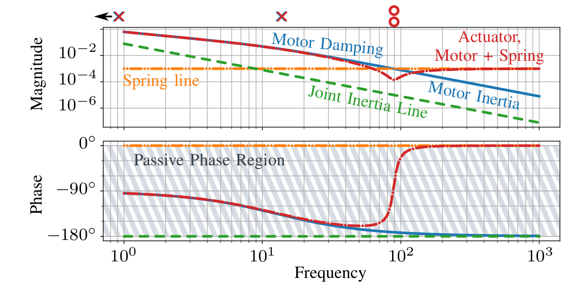
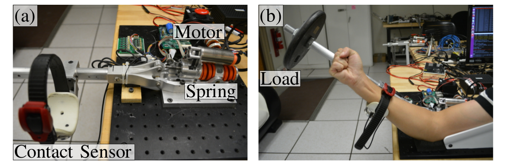
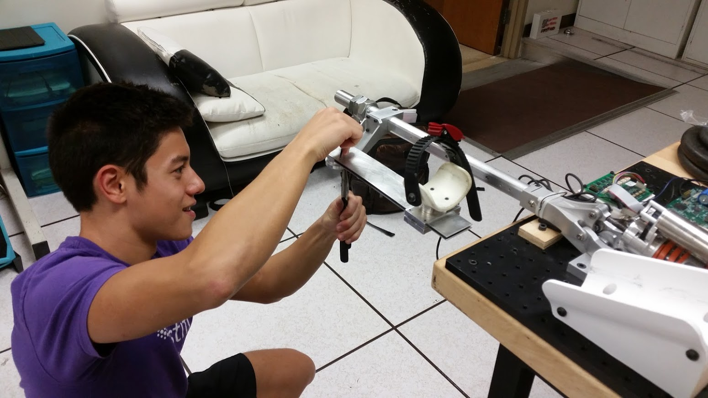
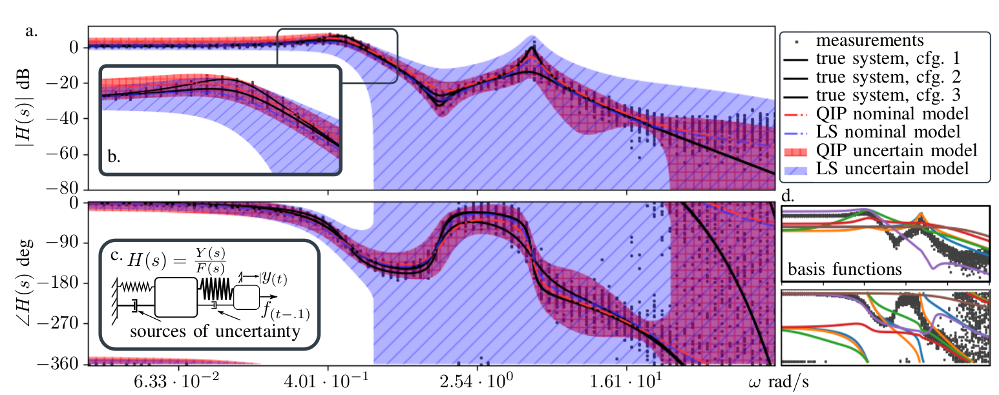
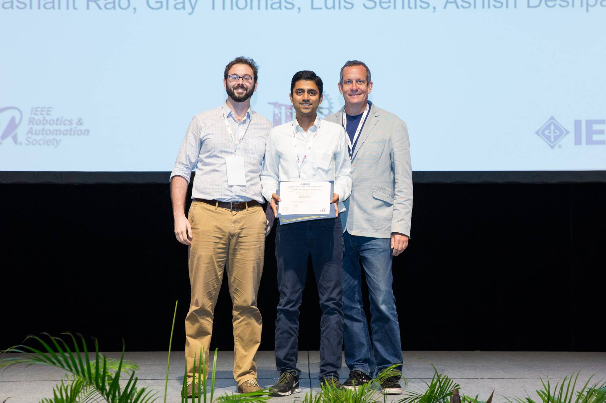
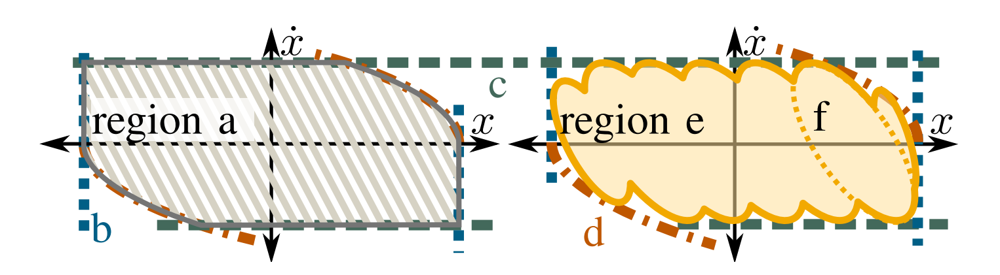

- High Performance Control of Series Elastic Robots
- Award Winner: Stability of Series Elastic Tendon-Driven Robotic Hands!
- High Performance Force Control for Series Elastic Amplification Exoskeletons
- Robust ℋ∞ Model-Set Identification
- Barrier Pairs and Safety Controllers
- Trajectory Optimization for Series Elastic Robots
- Computationally Efficient Multi-Contact Locomotion Planning
- Award Finalist: Point Foot Biped Robot Hume Team!
- DARPA VRC Winner: IJHR Paper Award Winner: Team IHMC!
High Performance Control of Series Elastic Robots
For robots with series elastic actuators (SEAs) feedback controllers are often designed to be energetically passive as a conservative heuristic for stability. To go beyond this performance limit is possible, but requires knowledge of the environment. If perfect knowledge is available then the SEA-environment system can have very high performance position control [JDSMC 2018], but this isn't a realistic scenario most of the time. Recently, I've been working on a system of gain assignment to position, velocity, spring-deflection, and spring-deflection-rate controllers using frequency domain compliance plots (as shown below) to visualize controller design as shaping the compliance of the actuator, such that it isn't quite passive but is close enough not to be destabilized by common environments. My tests in the summer of 2018 demonstrated stiffer-than passive control on one of the NASA Valkyrie actuators (writeup in progress). 
Series Elastic Amplification Exoskeletons
 Amplification exoskeletons are designed to extend the capabilities of the human operator by amplifying their interaction forces with the world. Using force sensorized attachments between the human and the exoskeleton, this research studies the limitations of controllers which make the human feel stronger relative to the environment by amplifying the human's interaction forces. One important part of this research is understanding the behavior of the human operator when they are wearing an exoskeleton, since their unintentional changes to joint stiffness have a big influence on amplification performance [ArXiV]. This research, which is done in collaboration with Binghan He, Nicolas Brissoneau, Luis Sentis, and Apptronik Systems, is currently scaling up to whole lower-body exoskeletons with contact constraints. I am also exploring the potential of soft cuffs to change the upper performance limitations along with UT undergraduate Jeremiah Coholich: 
Robust ℋ∞ Model-Set Identification
All control design problems are limited at high frequencies — roll-off constraints, passivity requirements, robust internal stability, cost function penalties on input, and margin requirements all methods for incorporating this reality into a design problem. These constraints all work against performance, so less conservative constraints are better. I've come to respect the philosophy that robust internal stability is the most fundamental of these limits. And since robust internal stability is based on a model-set description of the plant, I've designed an identification procedure which attempts to directly learn model-sets, specifically the additive uncertainty model-set from traditional ℋ∞ robust control theory, from frequency domain input-output measurements [IROS 2016 WS]. The approach is parallel to other methods of system identification (prediction error, FFT-based, iterative identification for control) due to different assumptions on the nature of the identification experiment [ACC 2017]. It also benefits from a convex formulation which represents the model-set geometrically as a high dimensional generalization of a cone, a degenerate quadric, which makes the identification problem tractable. In our recently accepted paper [TAC 2019] we provide an introduction to this "Quadric Inclusion Program" as well as an example which uses a set of orthonormal basis functions to learn a minimal uncertain model for the following frequency domain data  In this figure, I've plotted the frequency response of the uncertain SEA-like mechanical system shown in part c. Due to some nonlinear friction, the device does not have a consistent bode plot as the amplitude changes, and this is modeled by the three separate black lines in the main figure a. Using a combination of the orthonormal basis functions shown in part d, the quadric inclusion program (QIP) learns the uncertain model represented by the red shaded region. Essentially, QIP fits a model by squeezing the uncertainty up against the worst outlier data---shifting both the frequency domain weighting on the uncertainty and the nominal model to accomplish this aim. I aim to build on this theory until it is practically applicable to the problem of identification and synthesis for high performance series elastic robots and exoskeletons, though it certainly won't be limited to that use case.
Stability of Elastic-Tendon-Driven Robotic Hands
Fellow graduate student Prashant Rao of the ReNeu lab and I explained the stiffness limits for robotic hands driven by series-elastic tendons, using a passivity framework. This research started with Prashant, but I was able to help put his ideas into a rigorous mathematical proof by introducing the passivity framework, segregating linear sub-spaces of motion and force, and ultimately re-deriving his empirical positive definiteness condition under those assumptions. Prashant gave a great presentation at ICRA 2017 in Singapore, featuring many of his latest demo-videos and results on Cartesian stiffness, and we landed the best manipulation paper award [ICRA 2017]! 
Barrier Pairs and Safety Controllers
When hardware inputs are provided by untrusted sources, how can we guarantee the hardware will satisfy safety constraints? To answer this question I have, along with Binghan He, devised a backup safety controller which uses a minimum over quadratic Lyapunov functions to determine when to switch to backup safety mode, and which control law to apply when it does so. [ACC 2018] We are also working on a proposal to allow these safety controller to pair up with adaptive controllers for amplification exoskeletons, to offer both the improved performance of adaptive control, with the safety guarantees necessary to work with human operators. 
Trajectory Optimization for Series Elastic Robots
Series elastic robots typically have fairly linear actuator dynamics compared to their joint dynamics. To exploit this in trajectory optimization, Rachel Schlossman and I designed an iterative linear programming based trajectory optimizer which uses trust regions only for the robot impedance portion of the problem. See our ROBIO 2018 paper for details. Rachel and I have been working to extend this to optimize the falling and jumping behavior of a robotic leg with series elastic actuators.
Computationally Efficient Multi-Contact Locomotion Planning
This project explores a numerically efficient planning strategy for legged robots. Luis and I propose to decompose the kinodynamic planning problem into a geometric search for center of mass paths and a dynamic verification of the center of mass path. Geometric search is more tractable than kinodynamic search, and geometric search with an additional feasibility/cost function computation is not all that different from geometric search with obstacles. It also is beneficial to search in a low dimensional space, like center of mass paths, since the curse of dimensionality makes it hard to search larger spaces. But this all hinges on the simplicity of a dynamic check and cost evaluation procedure, which is what we focus on. [IROS 2016 Paper]
What we call the "dynamic optimization" includes the selection of foot steps and hand-holds from a finite list of possible contacts as well as the velocity profile over the center of mass path. Our approach bears similarity both to phase space locomotion planning techniques for bipedal walking and the minimum time trajectory scaling problem for robot arms. A fundamental aspect of the algorithm's efficiency is its use of linear programming with reuse of the active set of inequality constraints.
Point Foot Biped Robot Hume Team
In 2013 I worked with Donghyun Kim and Ye Zhao, as well as our advisor Luis Sentis, to control our series elastic biped robot. My focus was on real-time latency reduction, attitude estimation, and footstep planner theory. More detail is available in our journal paper [Finalist, Best WBC Paper 2016][Finalist, Best WBC-Video 2016][Link][pdf]

Figs: The Hume Robot uses red LED position markers which are (approximately) located by ceiling mounted cameras in the lab. The right video shows the orientation estimator tracking simulated movements. My data fusion algorithm tracks the robot torso pose implied by a noisy stream of led data. The algorithm is designed to handle occasional data omissions, since the cameras do not reliably find all the LEDs. The filter does not spend cycles maintaining a covariance estimate like the Kalman filter, but it does acknowledge that the belief in current knowledge must be weighed against the information content of each set of detected LEDs: fusing the data via weighted least squares naturally downplays frames with few LEDs detected, and if the LEDs are sparse enough to leave geometric ambiguity, then the algorithm will naturally rely on the past data. A state of the art eigenvalue algorithm is used to cast the direction cosine matrix to a quaternion (and then back), to ensure validity of the rotation without sacrificing the linearity of the least squares problem.
Team IHMC Virtual Robotics Competition
The DARPA Robotics Competition's initial round, a virtual robotics competition in the simulation engine Gazebo, featured many difficult challenges for the state of the art robot control software — navigating rough terrain, operator bandwidth caps, noisy simulated LIDAR data, and getting into and out of a simulated all terrain vehicle. IHMC's approach was solidly grounded in shared autonomy and practical management for large teams of user-interface programmers [Humanoids 2013]. While I certainly can't claim credit for the wild success of such a large team, I certainly tackled a respectable number of IHMC's agile planning "story cards" including
- LIDAR Simulation in jMonkeyEngine
- Quad-, Oct-, and Hypercube-tree classes for LIDAR processing (watch above)
- Cylindrical Grasp primitives in Twan Koolen's LP reaction wrench distributor (Award finalist: [IJHR], for best WBC paper of 2016), which proved critical to our car ingress and egress strategy (above)
- Geometric Footstep planning and user interface
- Automatic footstep height and tilt based on the quad-tree
- Various unspeakable hacks